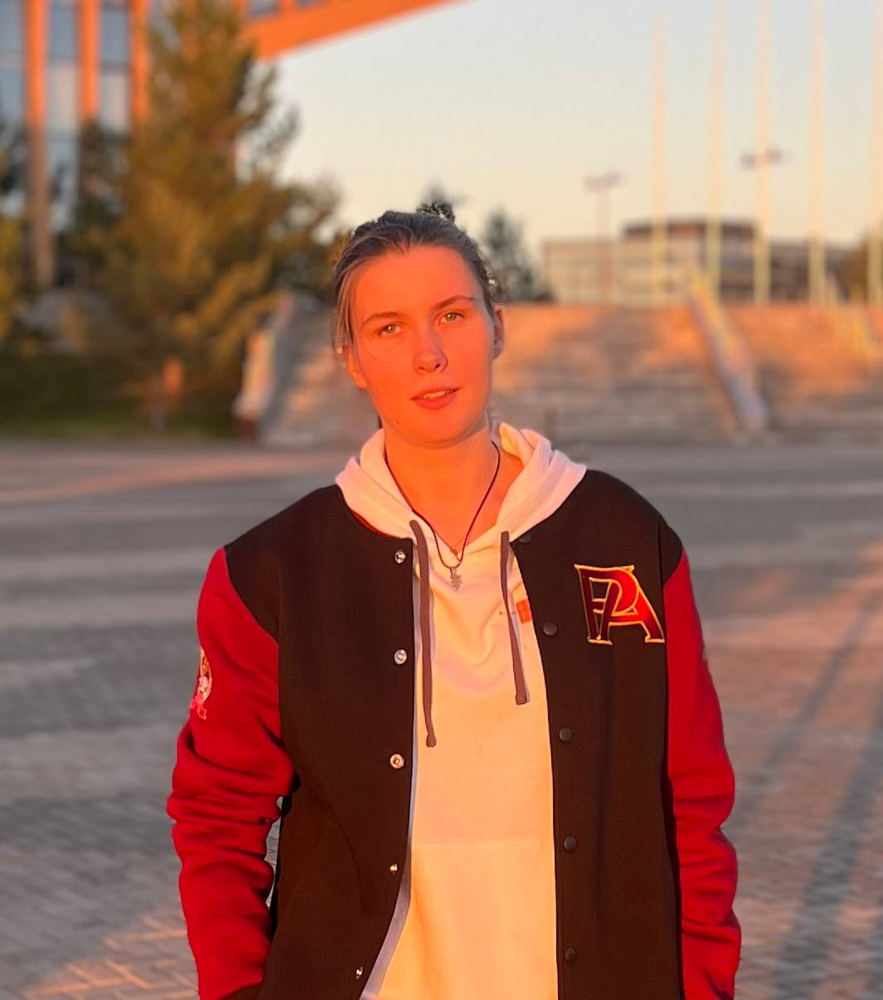

Marina Kotelevskaya
Project Portfolio
Senior SAP Integration Architect · Enterprise Solutions
U.T.A. Unseen Test Agent — AI-Powered Testing Platform
Personal Project · 2024 · Ongoing
Impact: Revolutionary testing platform, unified QA lifecycle, AI-powered automation
Designed and developed U.T.A. (Unseen Test Agent), a comprehensive AI-powered platform that revolutionizes the testing lifecycle from code to production. Built on three core pillars: Unification, Transparency, and Automation.
- Created central nervous system for QA processes with real-time insights
- Integrated every stage of testing lifecycle into single cohesive ecosystem
- Implemented AI-powered automation for repetitive testing tasks
- Built intelligent testing architecture with machine learning capabilities
- Designed platform to eliminate friction and enhance team collaboration
AI/MLPythonMachine LearningTest AutomationPlatform ArchitectureAPI Design
API 3.0 Migration — "Chestny ZNAK" Integration
Detzky Mir · 2023 · 6 months
Impact: 60% reduction in reconciliation time, 99.9% uptime, improved data security
Led comprehensive migration from legacy API to 3.0 for product marking system integration. Designed new data flows, implemented security enhancements, and created automated testing framework.
- Mapped 15+ business processes requiring API integration
- Built Postman collections with 50+ test scenarios in JavaScript
- Created SAP ERP load testing suite with 1000+ concurrent users
- Delivered functional specifications and code for 8 integration points
- Reduced manual reconciliation from 4 hours to 1.5 hours daily
SAP ERPAPI 3.0PostmanJavaScriptLoad TestingWSDL
MIR Electronic Certificate Payment System
Detzky Mir · 2023 · 4 months
Impact: 200+ stores enabled, new payment method, 15% increase in customer satisfaction
Architected and implemented electronic certificate payment system across retail network. Integrated SAP ERP with MIR payment gateway, enabling partial payments and returns processing.
- Designed microservice for payment processing with 99.9% uptime
- Built API integration between SAP and MIR payment gateway
- Implemented partial payment logic and return processing
- Created mobile app integration for store staff
- Reduced payment processing time by 40%
SAP ERPMicroservicesAPI IntegrationMIR GatewayMobile AppABAP
Production Order Management Microservice
PG Soft · 2024 · 3 months
Impact: 25% improvement in on-time delivery, 30% reduction in production delays
Built enterprise microservice for production order tracking and optimization. Integrated with SAP ERP, implemented real-time monitoring, and created predictive analytics for inventory management.
- Designed microservice architecture with Docker containers
- Implemented real-time order tracking and status updates
- Built inventory forecast model using machine learning
- Created automated alerts for production delays
- Integrated with 5+ external systems via REST APIs
MicroservicesDockerPythonMachine LearningREST APISAP ERP
Multi-Channel Finance Flow Separation
Detzky Mir · 2023 · 5 months
Impact: 80% reduction in manual reconciliation, improved financial reporting accuracy
Separated financial flows for retail and online channels, implemented direct HANA integration, and created unified reporting system. Automated reconciliation processes and improved data consistency.
- Designed dual-channel finance architecture
- Implemented direct SAP HANA data integration
- Built automated reconciliation system
- Created unified reporting dashboard
- Reduced manual data entry by 80%
SAP ERPSAP HANAFinance IntegrationAutomationSQLReporting
International Payment Gateway Integration
Detzky Mir · 2023 · 4 months
Impact: Expanded to Kazakhstan and Belarus markets, 40% increase in online sales
Integrated Halyk Bank (Kazakhstan) and Paritet Bank (Belarus) payment gateways for international expansion. Implemented multi-currency support and automated testing framework.
- Integrated 2 international payment gateways
- Implemented multi-currency support
- Built automated testing with chat-bots
- Created compliance reporting for different countries
- Reduced payment processing time by 50%
Payment GatewaysMulti-CurrencyAPI IntegrationTest AutomationComplianceJavaScript
Product Remarking & Inventory System
Detzky Mir · 2023 · 6 months
Impact: 90% reduction in manual inventory tracking, improved compliance
Built end-to-end system for product remarking and inventory management in Belarus. Integrated SAP ERP with "Electronic Sign" system and mobile application for store staff.
- Designed complete remarking workflow in SAP ERP
- Integrated with "Electronic Sign" government system
- Built mobile app for inventory management
- Created automated compliance reporting
- Implemented real-time inventory tracking
SAP ERPMobile AppGovernment IntegrationComplianceInventory ManagementAPI